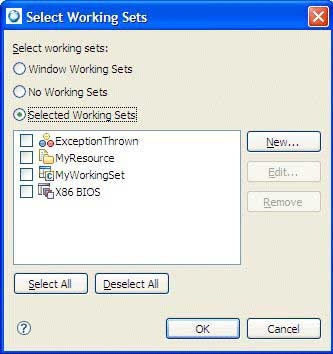

Use working sets to group elements to display in the Outline view, or for operations on a set of elements. When using the search facility, you can also use working sets to restrict the set of elements that are searched. In addition, you can select which configuration to build for each project in the working set. As a result, many combinations can be defined for a working set, however, only one is active at any given point in time when building a working set.

The Working Sets dialog for selecting elements to display in the Outline view.
If you click New to create a new working set, you can choose from these different types: QNX Sources, C/C++, a Breakpoint, and a Resource working set.
for more information about Working Sets, see the Workbench User Guide.